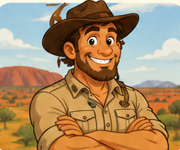
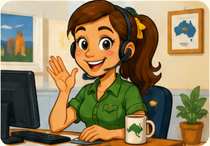
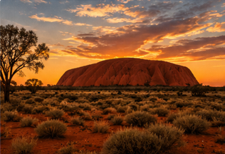

Outback Escape Travel Agency was created with one goal in mind:
to help travelers experience the beauty, excitement, and wonder
of Australia. We focus on unforgettable trips that include famous
landmarks, ocean views, city adventures, and relaxing beach escapes.
Our travel agency is designed for people who want more than just
a vacation. We help visitors plan memorable experiences that include
sightseeing, local culture, beautiful scenery, and exciting places
across Australia.
Meet Our Team

Founder: Jack Outback
Jack Outback is the founder of Outback Escape Travel Agency.
He has spent years exploring Australia and wanted to help others
discover the same amazing places he loves. Jack enjoys planning
adventures that are fun, safe, and full of unforgettable views.

Secretary: Sophie Sunshine
Sophie Sunshine is the secretary and travel assistant for Outback
Escape Travel Agency. She helps organize trips, answer questions,
and make sure every traveler feels prepared before their journey.
Sophie’s goal is to make each vacation simple, smooth, and exciting.
A Short History of Australia
Australia has a long and rich history that began with Aboriginal
and Torres Strait Islander peoples, who have lived on the continent
for tens of thousands of years. Their cultures, languages, and
traditions remain an important part of Australia’s identity today.
European settlement began in 1788 when the First Fleet arrived in
Sydney Cove. Over time, Australia developed into a modern nation
known for its wildlife, beaches, cities, and unique culture.
Today, it is one of the world’s most popular travel destinations.

The natural beauty of Australia.
Sydney Harbor at Night
Sydney Harbor is one of Australia’s most famous landmarks and one
of the best places to visit at night. The lights from the city
reflect across the water, creating a beautiful view of the skyline.
Visitors can enjoy the waterfront, restaurants, entertainment, and
the famous Sydney Opera House.
Aerial View of Bondi Beach
Bondi Beach is known for its bright blue water, sandy shoreline,
and active beach culture. Travelers visit Bondi to swim, surf,
relax in the sun, and enjoy the natural beauty of Australia’s
coastline. From above, Bondi Beach shows why Australia is such
a popular destination for beach lovers.